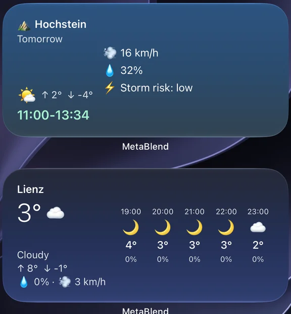

Approved 16 November 2026. Spec: docs/widgets-spec.md
Widgets: Slate and white, and three themes
The city widget and the hike widget, iPhone small and medium and Android small and medium, at their real sizes. The default follows the phone's appearance: Slate in dark mode, white in light mode, like the website's light theme. Mono, Winter and Sky come on top, further down. The data is real: Lienz and the Hochstein hike for tomorrow, from production on 16 November.
Dark appearance: Slate
Light appearance: white
Themes on top: Mono, Winter, Sky
Before launch the widgets take the look of the app icon chosen under More: the Mono, Winter or Sky icon gives the widgets that theme, every other icon the default above. Each theme has a dark and a light version that follow the phone's appearance like the default.
Dark
Light
After launch: a theme per widget (design only)
A "Theme" choice in the widget's own settings: on iPhone in Edit Widget (press and hold the widget), on Android in the screen that opens when the widget is placed or reconfigured. "As in the app" stays the default, so nothing changes for anyone who never opens it.
Today on the phone, for comparison

Colour: both widgets sit on the old blue "living sky". The new default is plain Slate or white, the same as the app.
Hike layout: today the name sits top left, the temperatures and window are stuck at the bottom, and wind, rain and storm float in the middle on the right. New: everything starts at the top. Name and day, then the summit window with its label, then the temperatures. The right column starts level with the name.
Icons: the emoji (⛰ 💨 💧 ⚡ and the weather) become the website's drawn icons: the sun in gold, the moon lavender, clouds grey, rain blue. Gold stays the one accent.
Meaning without colour: the green window always carries its words ("Summit window"), and without a window the widget says "No favourable window" in plain text.
Glow: in dark mode a faint gold sheen at the top edge where the sun is (as on the website): top left at dawn, overhead by day, top right at dusk, none at night. Light mode has none.